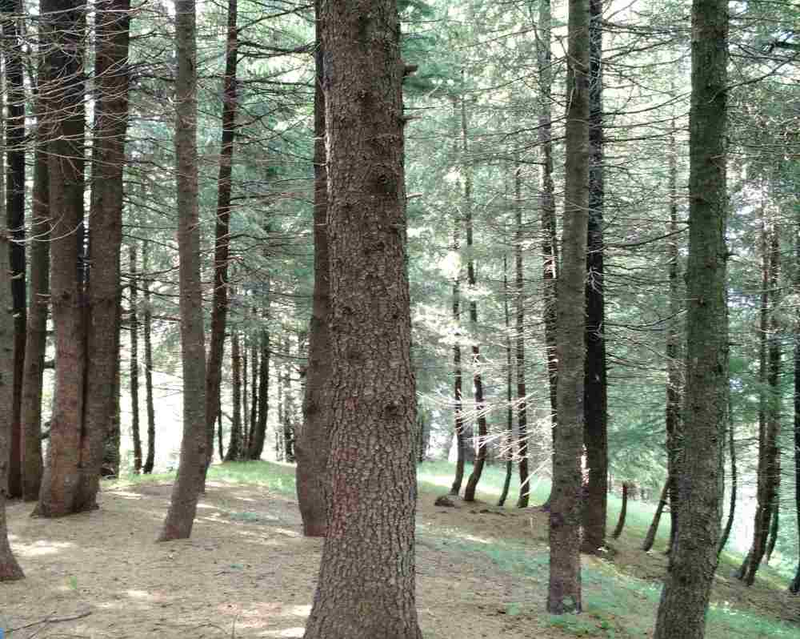

About Hyderabad
How To Reach
-
 BY AIR:Fligts to Hyderabad are readily available from any major Indian city. Hyderabad's Rajiv Gandi International Airport is infact one most well maintained Indian airports. It is located in Shamshabad, which is around 22 Km south of the main Hyderabad city.
BY AIR:Fligts to Hyderabad are readily available from any major Indian city. Hyderabad's Rajiv Gandi International Airport is infact one most well maintained Indian airports. It is located in Shamshabad, which is around 22 Km south of the main Hyderabad city. -
 BY BUS:Hyderabad is well connected from other nearby cities and towns through bus. Buses of Andhra Pradesh State Road Transportat Corporation (APSRTC) and other South Indian states operate to and from the city regularly.
BY BUS:Hyderabad is well connected from other nearby cities and towns through bus. Buses of Andhra Pradesh State Road Transportat Corporation (APSRTC) and other South Indian states operate to and from the city regularly. -
 BY TRAIN:Hyderabad has three Railway Stations - Hyderabad Deccan, Kachiguda and Secunderabad. All three are fully fucntional and are very well connected to other cities and towns.
BY TRAIN:Hyderabad has three Railway Stations - Hyderabad Deccan, Kachiguda and Secunderabad. All three are fully fucntional and are very well connected to other cities and towns. -
BY ROAD - OWN VEHICLE:Hyderabad is connected to other cities in the state and other South Indian states through a network of highways. Long drives from nearby cities such as Bangalore via Shamshabad – Kurnool - Gooty - Penukonda - Bagepalli - Chikballapur - Devanahalli is quite smooth and refreshing.
Best Time To Go
-
 BEST TIME TO GO:Hyderabad has a great weather for most part of the year, especially in comparison to other major cities of India. Months from April-June are hot. However, July is beautiful with the onset of monsoons. The city comes to life in August and September with lush green open spaces studded with big Deccan boulders. Months from October to February are beautiful with very slight chill in the air in the evenings. Cool breeze through out the year is what makes Hyderabad weather absolutely beautiful.
BEST TIME TO GO:Hyderabad has a great weather for most part of the year, especially in comparison to other major cities of India. Months from April-June are hot. However, July is beautiful with the onset of monsoons. The city comes to life in August and September with lush green open spaces studded with big Deccan boulders. Months from October to February are beautiful with very slight chill in the air in the evenings. Cool breeze through out the year is what makes Hyderabad weather absolutely beautiful. -
 WEATHER:34-20 degree C
WEATHER:34-20 degree C
Humidity 61%
It’s for a special reason that Hyderabad is close to our hearts. After all, that’s there where our story began, full of adventures and excitement.
A city where we became section mates and eventually landed up in the same study group in college. It is where we started going to DLF every night for chai. It is where we developed silent likeness for each other which eventually look an intense form. It is where we escaped the college gossip about us through long bike rides to Osman Sagar Lake and countless dinners at Paradise.
Hence, the first place which struck us both for Barney’s birthday celebration was of course, Hyderabad. There were a few resorts we’d heard of in Hyderabad but never visited since they were too expensive to be afforded by a college going non-earning couple. However, now since both of us were apparently settled, we thought of ticking the Resort Wish-list off our Hyderabadi bucket-list.
Day-1
We took early morning flights from our respective cities and reached Hyderabad almost at the same time. Barney had left his bike with his cousin while leaving Hyderabad. Hence, the first thing we did was to pick his bike and go to out very first destination, our college.

Going back to ISB on the bike after a long time was overwhelming. Nostalgia gushed in, even more when the security guard gave us an “I-remember-you” smile. As we entered the ISB road, we cheered out loud. Beautiful weather, vast spreads of trees on both sides and smooth wide road – ISB is actually nothing less than a beautiful resort. Feeling of extreme wistfulness rushed through me as we crossed the Student Villages. Although I was extremely happy about being back to college, the nostalgia was overpowering!

We walked to the atrium, which was one of my best spots at ISB. It’s a huge round pit with the academic center on top and stairways leading to each of the SVs from four sides. The atrium was designed in such a way that it was the most airy place on campus, without any artificial cooling whatsoever! We grabbed juice from Sipz – a small juice shop apparently started by one of the alumni and left the college.

We had booked Ellaa Hotel for that day. It is at Hill Ridge which is just 10 minutes away from ISB. We dropped our stuff and went to Udupi at Indra Nagar to have breakfast. Decision for lunch place was a no-brainer. It had to be chicken biryani at Paradise. No biryani in the world beats Paradise biryani. Of course, I am not a biryani connoisseur but the fact that Barney is capable of having it for 3 meals for 5 days in a row bears testimony to my point.
Our next stop was Osman Sagar Lake. When in college, Barney discovered the ‘spot’. Biking near Osman Sagar once, he swayed away from the main road to one of the small kaccha lanes on the side and rode through the interiors of some barren land, eventually leading him to the boundary of Osman Sagar. And what a discovery that was! The Spot was beautiful, especially during the sun set. We used to go there often. No human figure around, amidst waters extending to horizon on front, and huge boulders among the greens on the back. Going back to the Spot was a much needed battery-recharge! We call it the recharge to come back to the perfect emotional equilibrium.
Day-2

Next morning, after breakfast at Ellaa, we left on our bike ride. We planned to find another nice place for Biryani and since many had suggested Four Seasons, we planned to go there. Four Seasons is one of the most popular biryani places in Hyderabad, after Paradise of course. Awe enjoyed our chicken biryani there and left for the Hotel. We bought cake on the way back since it was Barney’s birthday next day and cake cutting at 12 had to be done without fail. We went to ISB one last time and then left for the Palm Exotica Resort at Shankarpalli – which is on the outskirts of the city.
Finally our fancy resort visit was coming closer! We booked a Meru since no other cab agreed to go that far. The place it around 40-45 KM from the main city. Although Google navigated us well, the whole drive was an adventure. The driver didn’t know the route; we of course didn’t know the route, and we were mainly dependant on Google to direct us through the small and unlighted lanes through the interiors of random districts in Telangana. Barney tried to engage the driver in a friendly conversation through-out the way so that driver doesn’t get intimidated riding through the unknown lanes to an unknown location!
We took a sigh of relief once we reached the resort. It really seemed away from humanity considering we could only see thick forest surrounding the whole region. However, the resort in itself was brilliant! We couldn’t help smile and exchange approving glances when we reached the place. It seemed like the place has been constructed to offer a nice weekend getaway to the people staying in the cities. The property is built in such a way that it has a huge area for recreational activities including cricket ground, tennis and squash courts and a huge driveway to the central reception which leads stay area at the back.
Since it was Barney’s birthday, we had booked a villa with a private swimming pool, on his special demand. It was called ‘Temple Tree Villa’. The bell boy drove us to the room in the baggi. We exchanged big smiles as he gave us a quick walk-through of all the facilities inside the suite. The most fantastic part of the suite was the balcony with the swimming pool – Carpet of lush green grass with a fine wood dining table and lovely view of the tranquil pool by the side under the shadow of a big Plumeria tree. A few petals of bright white flowers had fallel on the water making the pool look even lovelier. Dim lights from the lamp-posts made it a perfect setting for enjoying a quiet dinner, of course along with our conversations. At 12, we had a perfect celebration as Barney cut the cake and we opened the bottle of white wine we had especially bought for this occasion. If you ask me one thing I’d like to change in the way we celebrated the happy day, I would say nothing. Nothing better than being in the company of the person you adore the most on special days.
Day-3
We woke up late and had buffet breakfast at the café. We planned to spend the entire day lazing at the resort doing absolutely nothing physically or mentally draining. Barney carried his hard disk which has a good movie collection. We connected the same to the LED TV and enjoyed watching the movie in bed along with lunch ordered from the resort itself. Pool time came next. Although it wasn’t a very deep pool, it was big enough to fit both of us very conveniently. The water had been changed the same morning and was gleaming under the clear blue skies. We had a great time being the pool with company of a breezer or two we had carried especially to the place.
.jpg)
We enjoyed a short stroll through the entire resort in the evening and watched another movie at night. Barney told me later that it was one of his best birthdays, and for me, one of my best trips! All smiles!
Day-4
We had to go back to Hyderabad to catch flights to our respective cities. Before our check-out, we planned to catch-up on some recreational activities at Palm Exotica. They had a huge play area for adventure sports such as go-carting, rappelling, tri-cycle ride, archery, etc. among others. I am not a huge adventure sports fan. However, Barney got really excited on the idea of buying a package for the same. And to be honest, it turned out to be a great idea! We played 6 sports and it was totally worth it!
We took a cab back to Hyderabad and thought of having our last meal at Paradise itself. Yes, we never leave even a single opportunity of catching up on chicken biryani out there!
Ends to perfect holidays are always sad. We went to the airport and parted in the standard Barney style. We went to WH Smith and gifted a book to each other. It’s a lovely gesture and brings a smile while dealing with the parting. The plan was to complete the book till we meet next, which we knew would be very soon :)
P.S. We did finish our books. Not in the prescribed time, but later. But nevertheless, we ensure we keep our promises to each other :)
-

Khajjiar Lake and meadow
For people who have never visited this place, the meadow is going to be an instant favourite! It’s an amazingly beautiful picturesque enclosure of a huge ground carpeted with lush green grass, surrounded by think green Deodar forest in all directions. Khajjiar Lake is right in the middle of the meadow with a wooden bridge constructed across the lake. The place is an enchanting beauty!
-

Adventure activities at Khajjiar
Activities in Khajjiar include Horse riding, Para-gliding and Zorbing are the most common ones. There are many small eating joints across the area serving typical hill station food – Maggie, eggs and chai. However, many small restaurants serve proper food. There are small shops selling Tibetan and Himachal Pradesh specific handicrafts around the same place. People enjoy going for treks and nature walks around the meadow area. -

Gandi Chowk Market
Mainly the mall road of Dalhousie, but popularly known as Gandhi Chowk market has many small shops ranging from the ones selling typical wooden goodies to the ones selling momos. There are many popular restaurants which were established around 40 years back still serving at the market – mainly Kwality Restaurant and the well-known Dalhousie Café, a small snacks corner. There are a few Tibetan stores too selling local handicrafts and lovely woollen items such has mittens and gloves. -

Chamera Lake
Around 35 Km from Dalhousie, lies the Chamera Lake. It is an artificial lake built across Chamera Dam. The place has its own charm owing to beautiful flower gardens located across the boundary of the lake and small kiosks at the entrance selling souvenirs and snacks. The Lake is mainly popular for its boating. The boat seats around 30-40 people in one go and covers the perimeter of the lake in around 20-30 minutes. -

Dainkund Peak
Dainkund Peak is around 10 Km ahead of Dalhousie. There is a 45 minutes long beautiful trek from the starting point to the Pholani Devi Temple at the top of the hill. The trek will take you across narrow roads amidst clouds and fog to the peaceful temple. There are several view-points mid-way where you could stop, sit and absorb the lovely views being captured from top of the hills. There are many devotees that pay a visit to the temple including both visitors and localites. -

Kalatop Sanctury
Kalatop is around 10 Km from Dalhousie. It is located in the Chamba district and is a huge enclosure/ forest of pine, fir and deodar trees. The forest is so think that even in daytime, the sunlight didn’t reach through the trees to the ground, hence the name “Kala” top. It is an authorized wildlife sanctuary and you would require a valid permit from DFO of Chamba which is necessary for any vehicle to enter. It’s better to take an authorized cab since they have the required licenses. Kalatop is home to many wild animals and it is not recommended to go for a trek uphill without a guide. The place also has government resorts which should be prebooked well in advance in case you plan to stay there.

The beautiful Khajjiar meadow
Chamera Lake Boating Point, 35 Km from Dalhousie
The beautiful Pholani Devi Temple on top of Dainkund Peak

Trek to the Dainkund peak top with narrow roads amidst lovely views

Guest House Deodar Manor from outside

Lovely wooden balcony attached to rooms at the Deodar Manor

Lovely Flower Garden near the boating point at Chamera Lake

Amazingly well maintained gardens at the Grand View property
{kind=link}
Scenic view of the beautiful Khajjiar meadow
The famous Kwality Restaurant at Gandi Chowk Market

View of the Khajjiar meadow from the top>

View of the hills while taking a walk at Gandi Chowk at dusk>

View of the snow capped Himalayas from The Deodar Manor balcony>
-
Deodar Manor : KhajjiarCost : 5500-8000
-
Grand View Hotel : DalhousieCost : 3000-5000